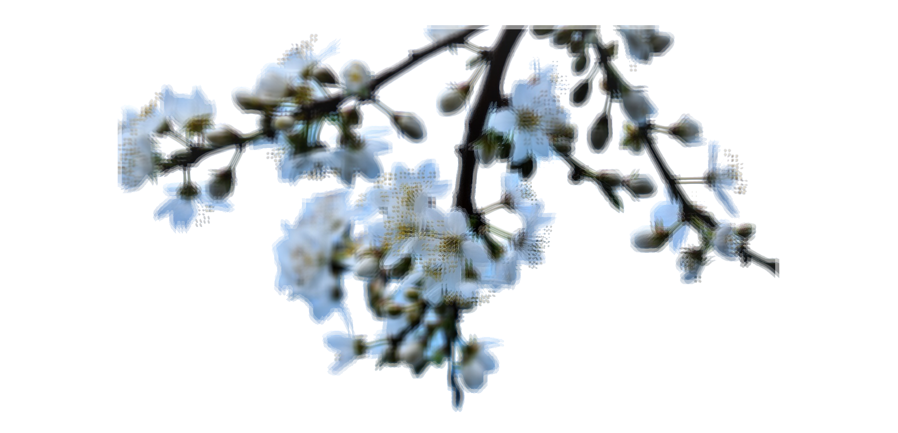

저도 새내기였던 때가 있었던 것 같은데..
정신 차려보니 내가 초과학기? 같은게 되었네요
어의관이 완공될 때까지 학교를 다닐줄은 몰랐어요
대학교를 초등학교보다 오래다니는 사람..
바로
..
..
나
요즘 꽃이 피고 있답니다.
봄이 오긴 했나봐요
엊그제 걷다보니 매화가 피었더라고요?
좋아하는 봄 꽃이 있으신가요?
저는 요즘 식집사의 삶을 살고 있습니다.
언제부터 식물을 키웠는지는 기억이 안나요.
사실 중간 기말 기간에 챙기지 못해 초록별로 보낸 친구들도 많아요.
처음 식물이 떠났을 때는 자괴감과 자책감에 빠졌었는데..
가드닝 책에서 식물이 죽었을 때는 자책하지 말고
실내는 원래 식물이 살기 가혹한 환경이며 삶과 죽음은 인간의 영역이 아니라고 하더라고요(?)
생각보다 큰 위로가 됩니다.
적당한 관심과 적당한 열정..아니면 그 무엇도 없어도 살아요.
그..혹시..하나..키워 보실래요?
생각보다 귀여워요..
진짜..
생각보다 고구마가 잘 크더라고요;
제가 말하는 감자라 속성이 잘 맞는지...
쓰다보니 무슨 드루이드 같은데 저는 아는게 없습니다..
그냥 식물짝사랑감자입니다.
각설하고..날도 따뜻한 봄인데 같이 가드닝 한번..해보실래요..?